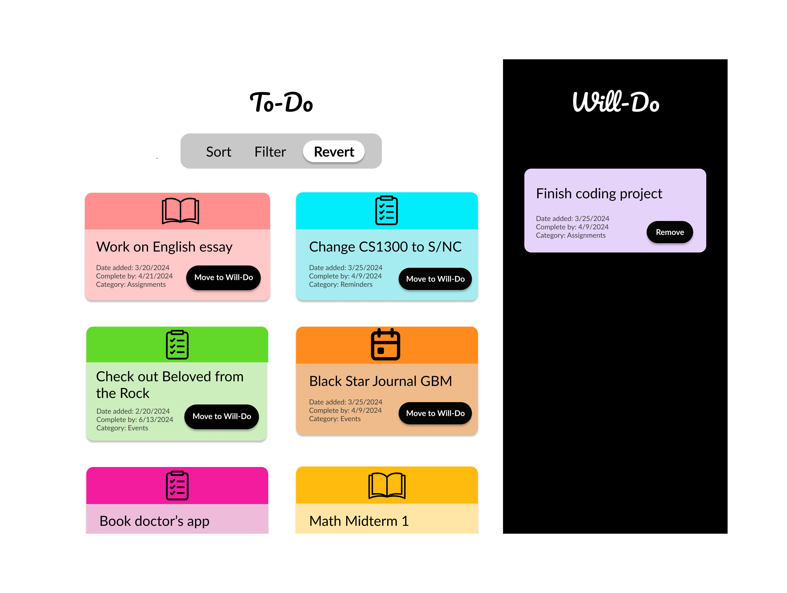

Development Hand-in
Destiny Wilson | April 12, 2024 | CS1300
Introduction
This development project provided an avenue through which I was able to explore React useStates for web development. Tasked with implementing filter and sort functions and an aggregator, I decided to make a list application which utilizes aggregation to divide tasks between those on a to-do list and others on a will-do list. Users will be able to sort through their to-do task based on “Complete-by” and “Date added” dates. Meanwhile, they can use the filter function to view items based on their color or category assignments. Finally, the revert button will reset the application, allowing users to filter, sort and aggregate their list items as they see fit.
Part I: Competitive Analysis
As the first step in the development process, I conducted competitive analysis to assess common aggregators and their implementations. I selected three different websites: GOAT, Ed Discussion and ASOS. I believed implementations for each would differ based on their differing purpose and user demographics. Below is a Competitive Comparison Chart that reflects my findings:

My experience analyzing the ASOS, GOAT and Ed Discussion favoriting features offered different experiences. ASOS is a fast-fashion retailer, GOAT is a sneaker, luxury apparel and accessory company and Ed Discussion is a university classroom discussion platform. ASOS’s website has a dedicated section for favorited items where they are displayed based on user-selected sorting criteria. Its location on the navbar coupled with these filtering options makes for simple website navigation. GOAT and ASOS’s dedicated favorites webpage share additional functionality including item previewing, editing and deletion, and quantity viewing. These filtering and editing options allow users to customize their cart to reflect their evolving purchasing plans. Moreover, Ed Discussion previews the title text for posts. Unlike ASOS and GOAT, Ed provides information on the section of the website from which a post came. This information allows users to efficiently identify pertinent webpage sections. However, GOAT and Ed’s absence of a favorites section from its navigation bar makes identifying these features on the website less efficient, learnable and memorable.
Conclusion
Based on these findings, I decided that my to-do list program should have the following features:
- Dedicated Webpage so users can efficiently access the list
- Number of items to allow users to know the number of list items they have
- Item Preview so users can easily view their list items without a click
- Sorting so users can organize data based on their needs
- Filtering to enable users to reduce the options they are considering
Part II: Design Ideation
After settling on my program's features, I started sketching design ideas.
First, I decided to do 9, 1-minute sketches to explore different web layouts.

Second, I decided on the layout I liked best and replicated my ideas on Figma.

I decided on the left and right layout because I thought it would
be most intuitive for American users. Additionally, I believed it
enabled the webpage to display a signicant information about the
website without forcing the user to scroll.
Furthermore, I believed the contrast between colorful cards and a
black and white background communicates a positivety that, while
may not be present when someone is mired in work, is nice to
engage with.
Reflection
While I have had prior experience using React, doing so completely
independently for the first time offered a valuable learning
experience. I found it particularly difficult to understand how to
implement overlapping filtering functions. Through research,
however, I was able to figure this out. Furthermore, ensuring that
the data structures and graphical changes maintain consistent was a
consistent bug I encountered.
Had I had more time to expand on this program, I would have created
a color customization and text editing feature to allow users to
create and customize their own tasks. Overall, useStates and React
items create more versatile programs and more optimized programming
experiences.